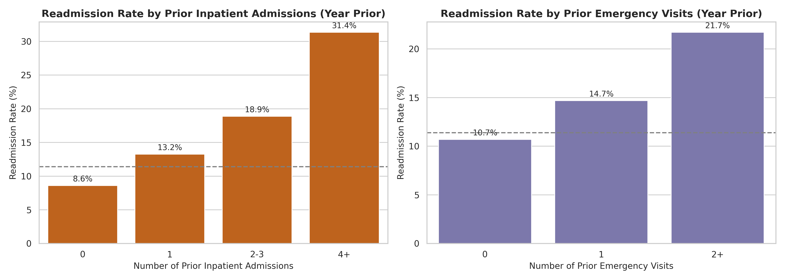
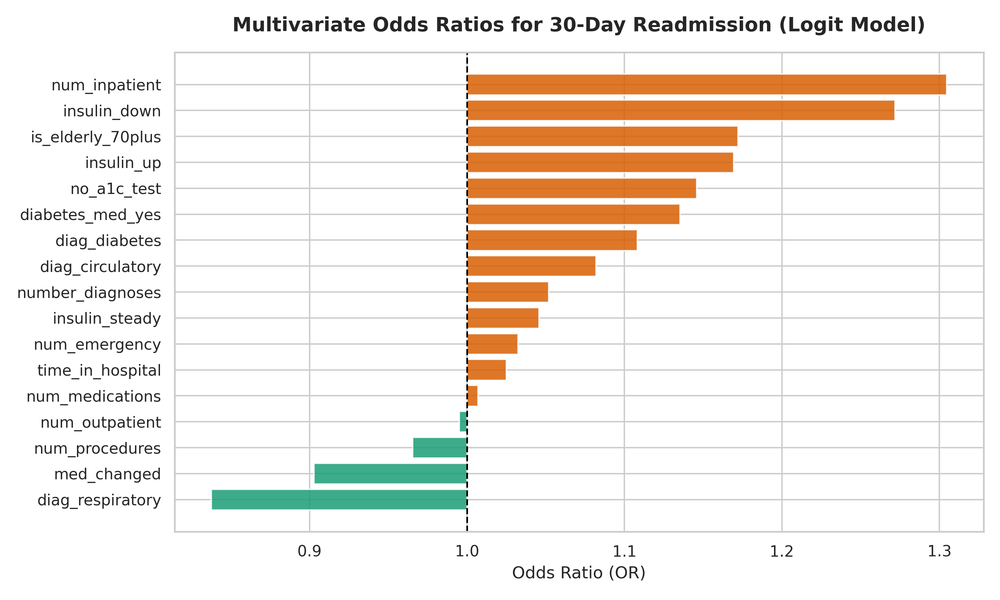
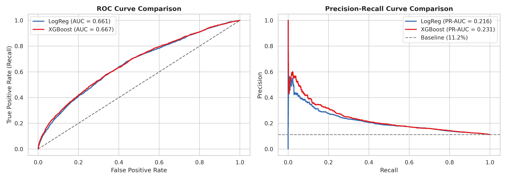
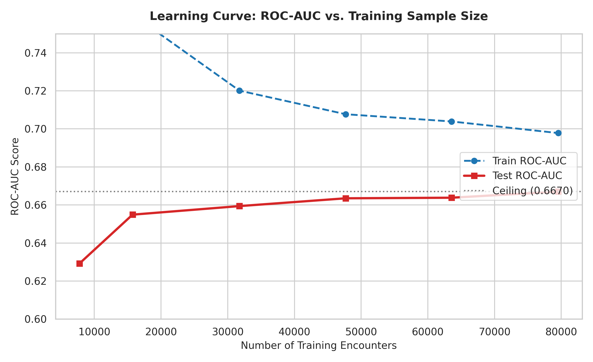
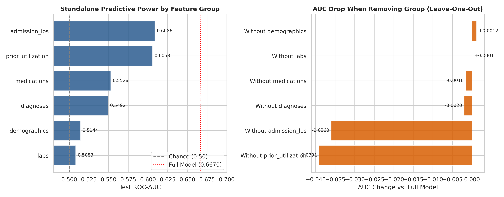

1. Tóm Tắt Dự Án & Bộ Chỉ Số KPI Cốt Lõi
Tái nhập viện sớm trong vòng 30 ngày ở bệnh nhân đái tháo đường nội trú là gánh nặng lớn đối với hệ thống y tế: làm tăng chi phí điều trị, nguy cơ nhiễm trùng bệnh viện và phản ánh lỗ hổng trong khâu chuyển tiếp chăm sóc từ viện về nhà. Dự án phân tích 99,343 lượt điều trị sau làm sạch nghiêm ngặt nhằm:
- Xác định các yếu tố nguy cơ độc lập thực sự qua phân tích hồi quy đa biến có đối chứng.
- Xây dựng mô hình máy học phân tầng rủi ro (chia nhóm chống rò rỉ theo mã bệnh nhân), phân tách được nhóm 20% nguy cơ cao nhất.
- Thiết kế quy trình can thiệp chuyển tiếp 48 giờ (PRD) và kế hoạch thử nghiệm lâm sàng đối chứng A/B Testing ($N=1,458$).
2. Vấn Đề Vận Hành & Nhu Cầu Phân Tầng Nguồn Lực
Trong thực tế vận hành bệnh viện đa khoa, đội ngũ điều dưỡng và nhân viên chăm sóc khách hàng không thể gọi điện theo dõi chuyên sâu cho 100% bệnh nhân xuất viện. Việc thiếu một công cụ phân tầng rủi ro tự động dẫn đến hai hệ lụy nghiêm trọng:
- Phân bổ nguồn lực cào bằng: Nhân viên y tế gọi điện dàn trải theo danh sách ngẫu nhiên, phần lớn thời gian dành cho các bệnh nhân có diễn tiến nhẹ và khả năng tự chăm sóc tốt.
- Bỏ sót ca bệnh nguy kịch tại nhà: Bệnh nhân cao tuổi, nhiều bệnh nền phức tạp hoặc kiểm soát thuốc kém không được theo dõi sát trong 48 giờ đầu tiên sau khi rời viện — giai đoạn dễ xảy ra sự cố tụt/tăng đường huyết cấp tính nhất.
- Giải pháp định hướng: Xây dựng mô hình xếp hạng danh sách xuất viện hàng ngày (Prioritization Worklist). Khi chỉ tập trung nguồn lực điều dưỡng vào 20% bệnh nhân nặng nhất, bệnh viện có thể bao phủ tới 38.90% toàn bộ các ca có nguy cơ tái nhập viện.

Hình 1: Tỷ lệ tái nhập viện tăng vọt từ 8.59% ở nhóm không có tiền sử nhập viện lên 31.36% ở nhóm nhập viện $\ge 4$ lần trong năm qua.
3. Phân Tích Nguyên Nhân Đa Biến (Multivariate Odds Ratios)
Điểm mấu chốt của phân tích nghiệp vụ lâm sàng là không đánh đồng tương quan đơn biến với nguyên nhân thực sự. Bằng cách kiểm soát đồng thời các yếu tố gây nhiễu trong mô hình hồi quy đa biến ($N=99,343$), chúng tôi phân định rõ ràng giữa yếu tố nguy cơ độc lập đã được xác nhận và các tín hiệu đơn biến mất ý nghĩa:
| Yếu tố nguy cơ | Odds Ratio (95% CI) | Giá trị p | Ý nghĩa vận hành y tế |
|---|---|---|---|
| Tiền sử nhập viện (`num_inpatient`) | 1.305 [1.249 - 1.362] | < 0.0001 | Driver mạnh nhất: Mỗi đợt nằm viện trước làm tăng 30.5% tỷ lệ chênh tái nhập. Cần kích hoạt Case Management ngay từ ngày đầu nhập viện. |
| Số chẩn đoán bệnh (`number_diagnoses`) | 1.052 [1.022 - 1.082] | 0.0005 | Bệnh đồng mắc làm đơn thuốc trở nên phức tạp (polypharmacy), tăng nguy cơ tương tác thuốc bất lợi. |
| Bệnh nhân cao tuổi $\ge 70$ (`is_elderly_70plus`) | 1.172 [1.022 - 1.344] | 0.0233 | Suy giảm nhận thức và thị lực kém dễ dẫn đến tiêm sai liều insulin; bắt buộc có người nhà tham gia buổi bàn giao xuất viện. |
| Thời gian nằm viện (`time_in_hospital`) | 1.025 [1.000 - 1.050] | 0.0480 | Nằm viện kéo dài phản ánh thể trạng suy kiệt, cần đánh giá chế độ dinh dưỡng và vận động phục hồi sau xuất viện. |
| Đổi liều Insulin (`insulin_down`) | 1.157 [0.990 - 1.353] | 0.0677 | Mất ý nghĩa thống kê trong đa biến; chỉ phản ánh độ nặng bệnh lý nền chứ không phải nguyên nhân trực tiếp gây tái nhập. |
| Không đo HbA1c (`no_a1c_test`) | 1.146 [0.971 - 1.352] | 0.1076 | 83.05% hồ sơ thiếu HbA1c, nhưng không đủ bằng chứng thống kê đa biến khẳng định làm tăng tái nhập 30 ngày. |

Hình 2: Biểu đồ tỷ suất chênh (Odds Ratios) và khoảng tin cậy 95% của các biến số lâm sàng độc lập sau khi kiểm soát biến gây nhiễu.
4. Khung Đánh Giá Mô Hình Dự Báo Trung Thực
Để triệt tiêu hoàn toàn hiện tượng rò rỉ dữ liệu (Data Leakage) giữa các đợt nằm viện của cùng một người bệnh, dữ liệu được chia theo cơ chế Group-split theo `patient_nbr` (80% Train: 55,992 bệnh nhân; 20% Test: 13,998 bệnh nhân).
| Mô hình | ROC-AUC | PR-AUC | Recall @ Top 20% | Precision @ Top 20% | Lift Factor |
|---|---|---|---|---|---|
| Logistic Regression (Baseline) | 0.6613 | 0.2158 | 38.00% | 21.26% | 1.90x |
| XGBoost (Challenger - Chọn dùng) | 0.6670 | 0.2312 | 38.90% | 21.76% | 1.94x |

Hình 3: Đường cong ROC và Precision-Recall Curve trên tập kiểm thử độc lập (Group-split by patient).
5. Chẩn Đoán Trần Hiệu Năng (Ceiling Analysis)
Nhằm kiểm tra xem mô hình có thể cải thiện thêm bằng kỹ thuật phức tạp hay không, chúng tôi thực hiện phân tích Learning Curve và Feature Ablation:
- Đường cong học bão hòa (Learning Curve): Điểm ROC-AUC của tập kiểm thử phẳng hoàn toàn từ cỡ mẫu $N \ge 45,000$ bệnh nhân. Điều này chứng minh trần hiệu năng bị giới hạn bởi không gian thuộc tính của dữ liệu, không thể cải thiện đơn thuần bằng cách thu thập thêm dòng dữ liệu cùng loại.
- Thực nghiệm loại bỏ đặc trưng (Feature Ablation): Tín hiệu dự báo chủ yếu tập trung ở 2 cụm: Tiền sử sử dụng dịch vụ y tế (`prior_inpatient`) và hình thức xuất viện. Các nhóm đặc trưng thuốc chi tiết chỉ đóng góp biên rất nhỏ (< 0.01 AUC).

Hình 4: Learning curve bão hòa ở $N \ge 45,000$.

Hình 5: Đóng góp biên của các nhóm biến số lâm sàng.
6. PRD: Gói Can Thiệp Chăm Sóc Chuyển Tiếp 48 Giờ
Dựa trên kết quả phân tầng rủi ro, dự án thiết kế quy trình can thiệp chuyển tiếp (Transitional Care Protocol) dành riêng cho nhóm 20% bệnh nhân nguy cơ cao nhất:
Bước 1: Teach-Back Tại Giường
Dược sĩ lâm sàng đối soát thuốc trực tiếp trước khi xuất viện, yêu cầu bệnh nhân hoặc người chăm sóc thực hành lại thao tác chỉnh liều và tiêm bút insulin; hướng dẫn nhận biết hạ đường huyết.
Bước 2: Cuộc Gọi Chủ Động 48h
Điều dưỡng chuyên trách gọi điện trong vòng 48 giờ đầu tiên theo checklist 5 điểm: đo đường huyết mao mạch, tuân thủ thuốc tại nhà, dấu hiệu cảnh báo, dinh dưỡng và nhắc lịch tái khám.
Bước 3: Phân Luồng Xử Trí Khẩn Cấp
Nếu phát hiện đường huyết > 250 mg/dL hoặc triệu chứng bất thường, kích hoạt tư vấn bác sĩ điều trị trong 2 giờ hoặc điều phối xe cấp cứu tới nhà ngay lập tức.
7. Kế Hoạch Thử Nghiệm Lâm Sàng Đối Chứng (A/B Testing Plan)
Để đo lường hiệu quả thực tế của quy trình can thiệp chuyển tiếp 48h trước khi triển khai diện rộng, chúng tôi xây dựng kế hoạch thử nghiệm ngẫu nhiên có đối chứng (RCT):
- Đơn vị ngẫu nhiên hóa: Phân nhóm ngẫu nhiên theo mã bệnh nhân (`patient_nbr`) tại thời điểm xuất viện thuộc nhóm High-Risk.
- Nhánh A (Đối chứng): Chăm sóc tiêu chuẩn theo quy trình xuất viện hiện tại ($p_1 = 21.74\%$).
- Nhánh B (Can thiệp): Gói chăm sóc chuyển tiếp 48 giờ (Teach-back + Cuộc gọi 48h).
- Kiểm định thống kê: Two-Proportion Z-Test ($\alpha = 0.05, \text{Power} = 80\%$, kiểm định hai phía).
| Mức giảm kỳ vọng (MDE) | Tỷ lệ tái nhập sau can thiệp | Cỡ mẫu mỗi nhánh ($N_{\text{arm}}$) | Tổng cỡ mẫu cần thu thập | Dự phòng mất dấu 5% |
|---|---|---|---|---|
| Giảm 3 điểm % | 18.74% | 2,813 | 5,626 | 5,923 bệnh nhân |
| Giảm 4 điểm % | 17.74% | 1,551 | 3,102 | 3,266 bệnh nhân |
| Giảm 5 điểm % (Khuyến nghị) | 16.74% | 972 | 1,944 | 2,047 bệnh nhân |
| Giảm 6 điểm % | 15.74% | 661 | 1,322 | 1,392 bệnh nhân |
8. Bảng Điều Phối Ưu Tiên Xuất Viện (Interactive Worklist Demo)
Dự án đi kèm một ứng dụng giao diện hoàn chỉnh được xây dựng sẵn để mô phỏng màn hình làm việc hàng ngày của điều dưỡng trưởng tại khoa nội trú:
Clinical Risk-Stratified Worklist Demo
Trải nghiệm tìm kiếm bệnh nhân, lọc danh sách theo nhóm rủi ro (High, Medium, Low), mở ngăn kéo thông tin lâm sàng chi tiết và checklist gọi điện chăm sóc 48 giờ.
Mở Bản Demo Ứng Dụng ↗9. Đóng Góp Nghiệp Vụ & Cảnh Báo Lâm Sàng
- Minh bạch về năng lực mô hình: Thừa nhận thẳng thắn mức AUC 0.667 và tập trung khai thác giá trị thực tế của xếp hạng ưu tiên (Lift = 1.94x, bắt trúng 38.9% ca tái nhập), thay vì hứa hẹn những kết quả viển vông.
- Tư duy giải pháp khép kín (End-to-End): Dự án đi trọn vẹn từ phân tích nguyên nhân đa biến, huấn luyện mô hình có trách nhiệm, xây dựng PRD quy trình lâm sàng đến thiết kế A/B testing kiểm chứng.
- Nguyên tắc phối hợp y tế: Công nghệ chỉ đóng vai trò phân tầng hỗ trợ ra quyết định; mọi hành động can thiệp y khoa đều phải tuân thủ hướng dẫn của bác sĩ và phê duyệt của Hội đồng Lâm sàng.